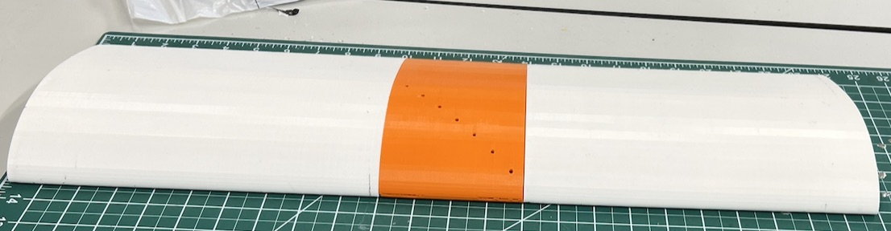
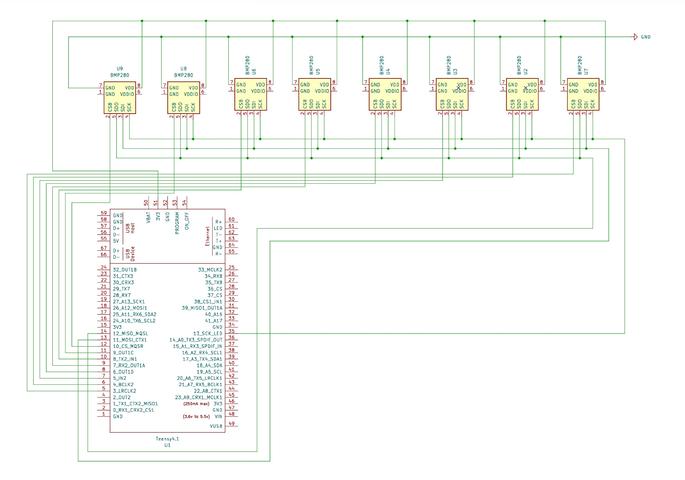
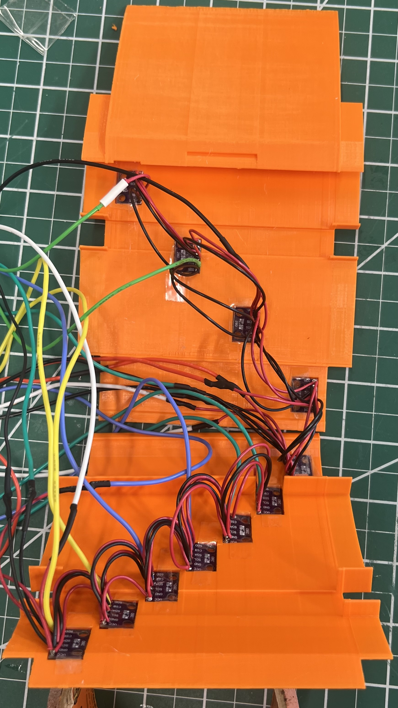
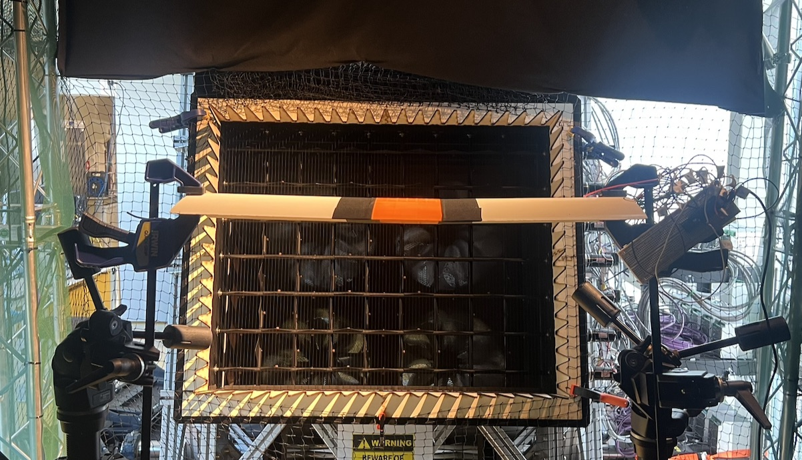

Gust Mitigation for Small Fixed-Wing Aerial Vehicles

The idea
Small drones fly in the atmospheric boundary layer, where turbulence is intense and gusts often lead to collisions. Inertial sensors only react once the drone has already been knocked off course. Birds instead feel the flow with sensors across their wings. This project asks whether basic barometric pressure sensors on a wing can do the same and detect turbulence before it moves the vehicle.
What I built
A bird-inspired Eppler 423 wing, designed in SolidWorks and 3D printed, with 11 BMP280 pressure sensors (7 on top, 4 on the bottom) across the first 30% of the chord. The sensors sit behind small taps in a diagonal cascade to keep the surface smooth, and all eleven share one SPI bus to a Teensy 4.1.





Results
Tested at 6.5 m/s and a 6° angle of attack, the array clearly picked up the formation of lift, a steady pressure difference of about 23 Pa between the bottom and top surfaces. It also told smooth flow apart from turbulent flow and distinguished between different types of turbulence, with the leading-edge sensors responding most strongly.
The limit is sensitivity: at this speed the total dynamic pressure is only about 26 Pa, close to the sensor's accuracy, so weak gusts get lost in the noise. Faster, more sensitive sensors and a wing free to rotate are the next steps towards true fly-by-feel control.